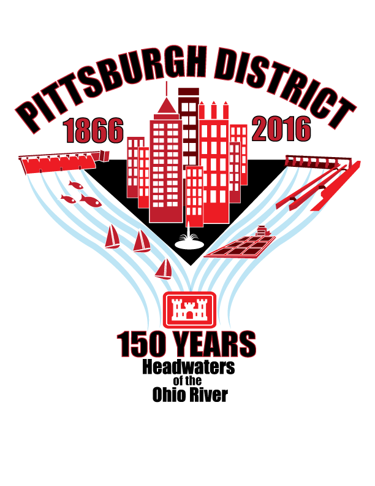
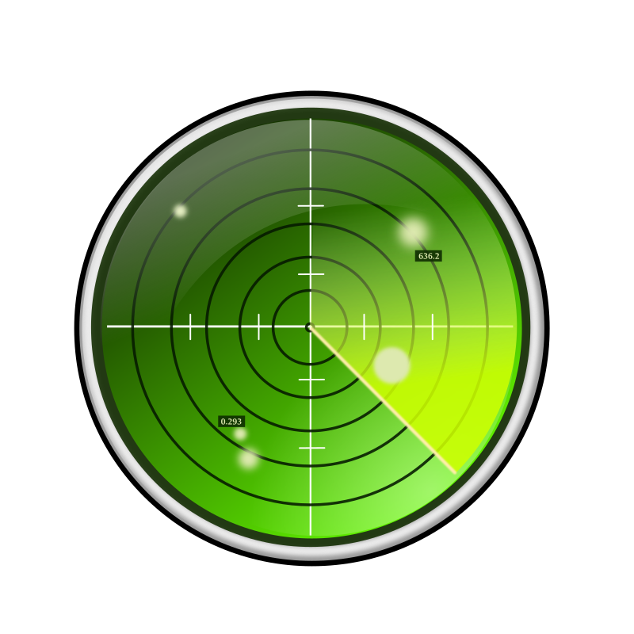
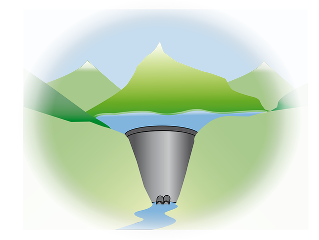

Mobile App

Lakes
Fed LPP

Non Fed LPP

Allegheny
River
Mon River
Ohio River
Location
Contact Us
Locate A
Vessel
News

Business
With Us
Locks and
Dams Facts
| Pittsburgh District Mobile App |
 | |
|---|---|---|
Lakes |
Fed LPP |
Non Fed LPP |
Allegheny River |
Mon River |
Ohio River |
Location |
Contact Us |
 Locate A Vessel |
News |
Business With Us |
 Locks and Dams Facts |